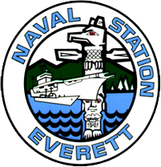

SEE MIKE IN THE ROOM
STAGE PRESENCE, NOT A SHOWREEL PROMISE.
SPEAKING TOPICS
FEATURED KEYNOTES & WORKSHOPS.
WHAT'S NEXT?
Clarity Before the Decisions That Matter
The hardest leadership decisions aren’t always made in crisis. Sometimes everything is working—and the leader must decide whether the path that created today’s success is still the right path for tomorrow. This practical keynote helps audiences separate signal from noise, identify the decision that actually matters, challenge inherited assumptions and move forward with greater clarity.
WHO DECIDES?
Leading, Deciding & Staying Human in the Age of AI
AI is moving from tool to teammate to decision-maker. Mike gives leaders a practical Human + AI Decision Architecture to clarify what AI should inform, recommend or act on—and where human judgment, accountability and escalation must remain.
THE HUMAN ADVANTAGE
What Humans Must Get Better At as AI Gets Better at Everything Else
As machines become more capable, distinctly human capability becomes more valuable. Drawing from Human 10.0 and The Rise of Humanness in the Age of AI, Mike shows audiences how to strengthen clarity, resilience, judgment and courage under pressure.
THE NEXT MISSION
Finding Purpose & Direction When the Mission Changes
Built for military, veteran and transition audiences, this keynote helps people navigate the identity shift that comes when a familiar mission ends—and create clarity, purpose and direction for the chapter ahead.
PROOF
WHAT AN EVENT LEADER SAYS.
PATRICK FITZHUGH
USAA
WHO MIKE SPEAKS TO
ROOMS FULL OF LEADERS AT INFLECTION POINTS.
EXECUTIVE & LEADERSHIP TEAMS
Navigating consequential decisions, organizational change, and uncertainty.
HR & PEOPLE LEADERS
Preparing people and organizations for changing work, technology, and expectations.
ASSOCIATIONS & CONFERENCES
Audiences navigating leadership, workforce, and future-of-work challenges.
MILITARY & VETERAN COMMUNITIES
Navigating transition, identity, purpose, and the next mission.
WORK FEATURED BY
USA TODAY · THE BOSTON GLOBE · YAHOO FINANCE · CBS RADIO
SELECTED ORGANIZATIONS & AUDIENCES


FOR ORGANIZERS
PLANNING AN EVENT?
BRING THE CONVERSATION TO YOUR AUDIENCE.
Tell Mike about your event, your audience, and the decisions they’re facing — and find the right keynote or workshop for the room.
BOOK MICHAEL FOR YOUR NEXT EVENT →